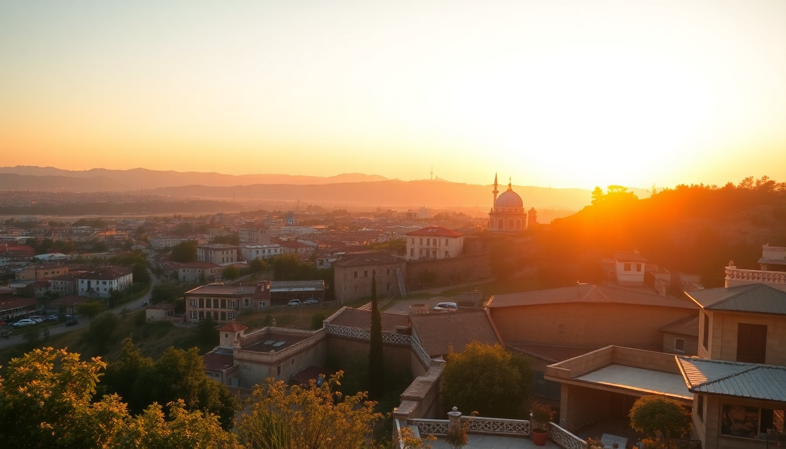

Best Turkish Cities: Istanbul, Cappadocia, Antalya Guide

I spent two weeks bouncing between Istanbul’s chaotic energy, Cappadocia’s lunar valleys, Antalya’s turquoise coast, and the blinding white terraces of Pamukkale. Here’s exactly how I’d plan it again — with the hotels I’d rebook, the tours I’d skip, and the one restaurant that made me cancel my next dinner reservation.
Which city should you fly into first?
Start in Istanbul. Most international flights land at Istanbul Airport (IST) on the European side, and it’s the easiest hub to recover from jet lag before heading inland. I landed on a Tuesday afternoon, took the Havaist shuttle to Taksim (about 45 minutes, 130 TL), and checked into The Stay Nisantasi — a quiet boutique hotel in a neighborhood that feels more like Paris than the Middle East. If you’re on a tighter budget, Hamit Hotel in Sultanahmet puts you steps from Hagia Sophia for under €60 a night.
- Istanbul Airport (IST) — main international hub, 40 km from city center
- Sabiha Gökçen (SAW) — cheaper domestic flights, on the Asian side
- Havaist shuttle — reliable airport bus, cheaper than taxis
- The Stay Nisantasi — modern rooms, great breakfast, walkable to Istiklal Street
Is three days in Istanbul enough?
Three days is tight but doable if you move fast. Day one: hit Hagia Sophia and Basilica Cistern early (buy your Museum Pass Istanbul at the gate — it covers 10+ sites for 700 TL and skips most queues). Day two: cross the Galata Bridge to Karaköy for lunch at Karaköy Güllüoğlu (baklava so good I went twice), then walk up to Galata Tower for the view. Day three: take the ferry to Kadıköy on the Asian side — the fish market and Çiya Sofrası (an Anatolian restaurant run by a local food historian) are worth the trip alone.
I skipped Topkapi Palace. The crowds were insane, and honestly, the Basilica Cistern gave me a better sense of Ottoman opulence without the shoulder-to-shoulder shuffle.
- Hagia Sophia — free entry, but arrive before 9am to beat tour groups
- Basilica Cistern — book online, the lighting show is worth the €15
- Karaköy Güllüoğlu — best baklava in the city, get the pistachio
- Çiya Sofrası — Kadıköy, cash only, order the lamb with apricots
What’s the best way to see Cappadocia without the tourist trap feeling?
Fly from Istanbul’s Sabiha Gökçen (SAW) to Nevşehir Kapadokya Airport (NAV) — it’s a 90-minute flight with Pegasus or Turkish Airlines, often under €50 one-way. Skip the crowded Göreme Open Air Museum and stay in Ürgüp instead. I booked a cave room at Sultan Cave Suites in Göreme for the famous sunrise terrace photos, but honestly, Museum Hotel in Ürgüp has better views, a real heated pool, and fewer influencers fighting for mirror selfies.
The balloon ride is worth the hype. I paid €180 with Butterfly Balloons — smaller baskets, better pilot, and they actually cancelled our first morning due to wind (which means they care about safety). The sunrise over the fairy chimneys is the single most impressive thing I’ve seen in Turkey.
- Butterfly Balloons — book direct, avoid third-party resellers
- Museum Hotel — Ürgüp, rooftop pool, rooms carved into rock
- Sultan Cave Suites — Göreme, iconic terrace, book months ahead
- Red Valley hike — free, 2 hours, fewer tourists than Rose Valley
Is Pamukkale overrated?
Yes and no. The white travertine terraces are stunning in photos, but in reality, you’re walking barefoot on slippery limestone with hundreds of other tourists. Go at 8am when the gates open — by 10am it’s a human river. The real gem is Hierapolis, the ancient Roman city sitting right on top of the terraces. The theater and the necropolis are almost empty if you walk past the first 100 meters.
I stayed at Venus Suite Hotel in the town of Pamukkale itself — basic but clean, with a small pool and a breakfast spread that included fresh gözleme. Don’t bother with the “thermal pools” in town; they’re just lukewarm hotel pools with added chlorine.
- Hierapolis — included in the Pamukkale entry fee (€12)
- Venus Suite Hotel — walking distance to the north gate
- Pamukkale south gate — less crowded entrance, start here at 7:30am
- Cleopatra’s Pool — €8 extra, warm mineral water, ancient columns underwater
How many days do you need in Antalya?
Three days minimum. Antalya is split into two distinct zones: the historic Kaleiçi district (narrow cobblestone streets, Ottoman houses, marina) and the modern beach strip of Konyaaltı. I spent two nights at Tuvana Hotel inside Kaleiçi — a restored 19th-century mansion with a courtyard pool and a rooftop bar that serves the best rakı in town. Then one night at Rixos Downtown on Konyaaltı Beach for the sea views.
The must-do here is the Antalya Museum — don’t skip it. It’s one of Turkey’s best archaeological museums, with statues from nearby Perge and Aspendos that are better preserved than anything in Istanbul. For dinner, 7 Mehmet serves a tasting menu of modern Turkish cuisine (the manti with burnt butter and yogurt is unforgettable), but book a week ahead.
- Tuvana Hotel — Kaleiçi, courtyard rooms, €80/night
- Antalya Museum — €10, allow 2 hours, air-conditioned
- 7 Mehmet — Kaleiçi, tasting menu €40 per person
- Konyaaltı Beach — free public beach, pebbly but clean water
Can you combine Pamukkale and Antalya in one trip?
Yes, and it’s the smartest route. From Cappadocia, take a night bus or a cheap flight to Denizli (the nearest city to Pamukkale). Spend one night in Pamukkale, see the terraces at dawn, then rent a car or take a 3-hour bus to Antalya. I used Kamil Koç bus company — comfortable seats, wifi, and a snack service that included a surprisingly good cheese sandwich.
If you drive, stop at Saklıkent Gorge on the way — a narrow canyon where you can wade through ice-cold water between limestone walls. It’s a 20-minute detour and way more memorable than the roadside carpet shops.
- Kamil Koç — bus from Denizli to Antalya, €10, departs hourly
- Saklıkent Gorge — €5 entry, rent water shoes at the gate
- Rental car — around €30/day, book with Sixt at Denizli airport
FAQ
Is it safe to travel to Turkey as a solo female traveler? I traveled solo for the entire two weeks and never felt unsafe. The main hassle is persistent touts in tourist zones — a firm “no” and walking away works. In Istanbul, avoid dark side streets off Istiklal after midnight. In Cappadocia, the cave hotel staff were protective and helpful. Download the BiTaksi app for reliable cabs; never take a random taxi from the airport.
What’s the best month to visit Turkey? April–May or September–October. I went in late April — Istanbul was 18°C with occasional rain, Cappadocia was 15°C and perfect for hiking, and Antalya hit 25°C for swimming. July and August are brutally hot (40°C in Antalya) and crowded. November can be rainy in Istanbul, and Cappadocia gets snow in January.
Do I need a visa for Turkey? Most nationalities need an e-Visa. I applied at evisa.gov.tr — it took 5 minutes, cost $50 USD for US citizens, and was emailed as a PDF. Print two copies. You need at least 6 months validity on your passport from your entry date.
Conclusion
- Fly into Istanbul (IST), spend 3 days on both European and Asian sides
- Cappadocia needs 2 nights — stay in Ürgüp, book Butterfly Balloons
- Pamukkale is a one-morning stop — arrive at 8am, then leave
- Antalya deserves 3 days — split between Kaleiçi and Konyaaltı Beach
- Connect the dots by bus or cheap domestic flights — don’t waste time on long drives